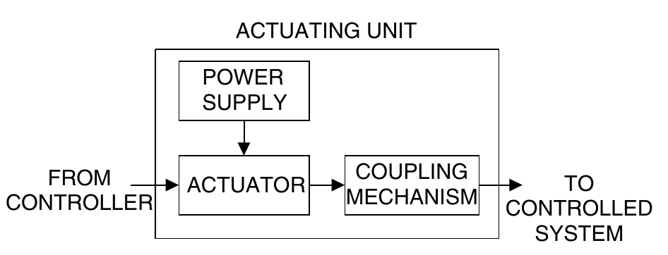
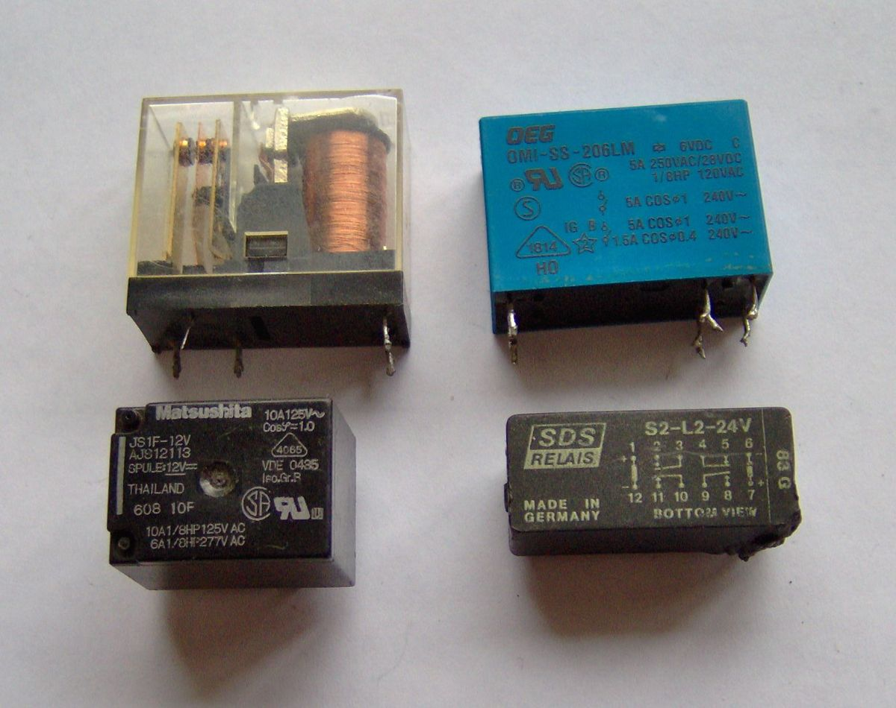
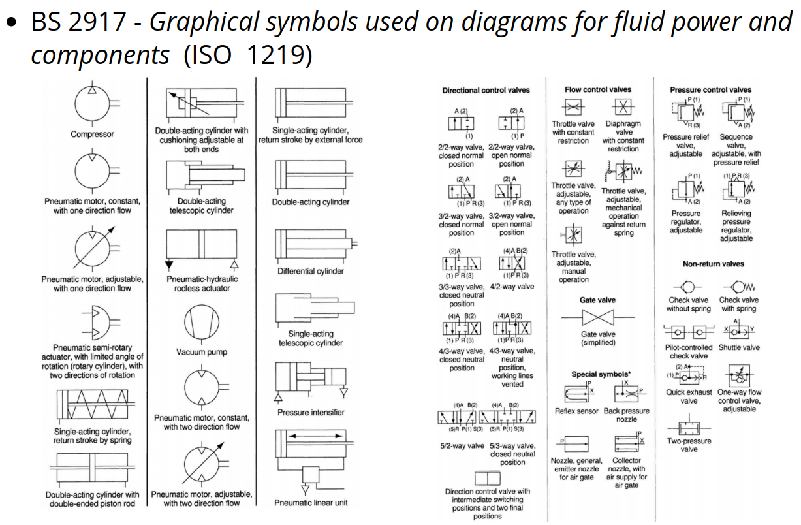
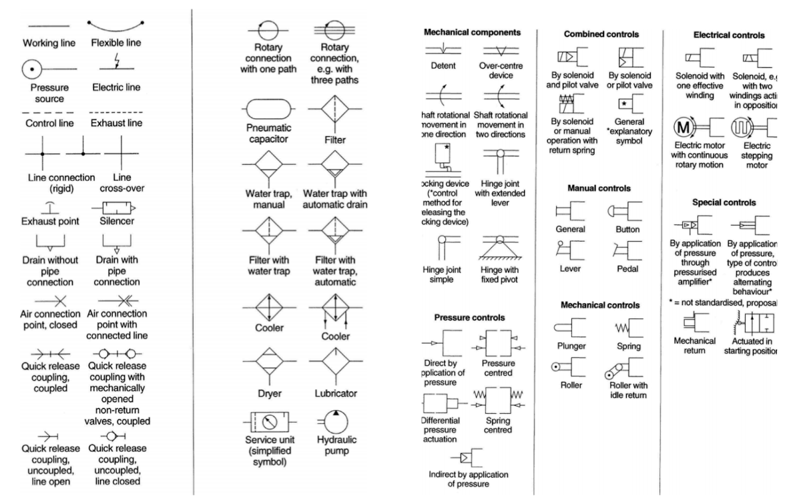
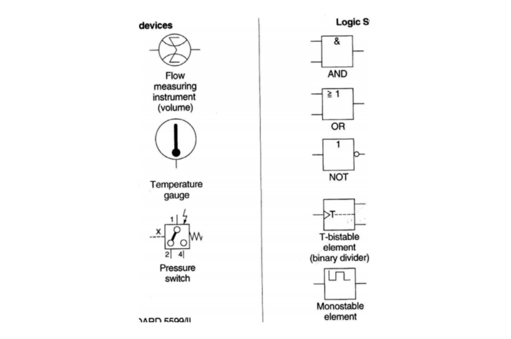
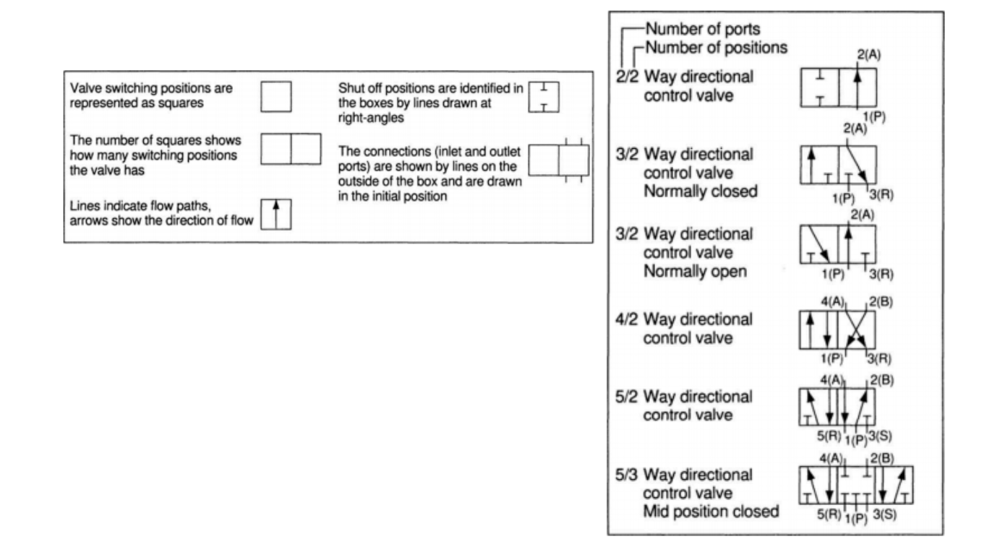
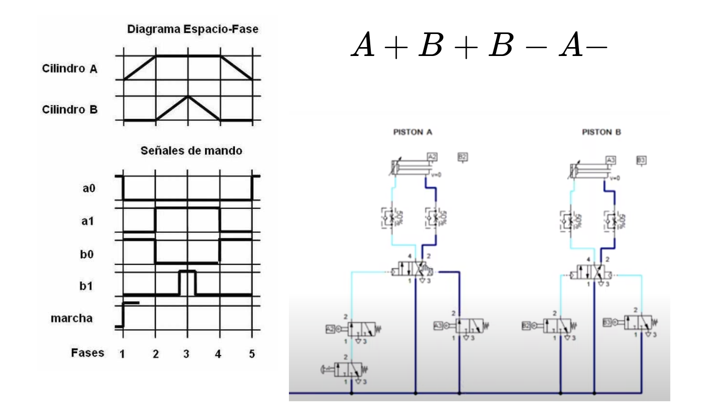
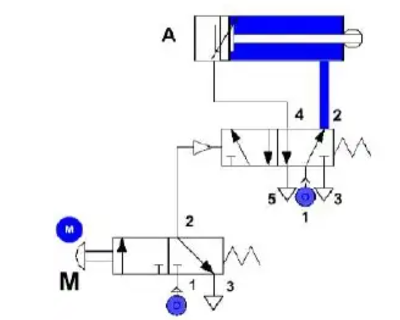
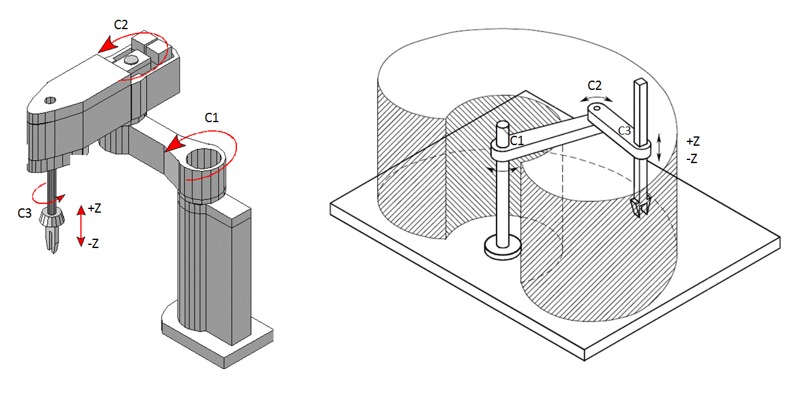

<style> .reveal section img { background:none; border:none; box-shadow:none; } #left { margin: 10px 0 15px 20px; text-align: center; float: left; z-index:-10; width:48%; font-size: 0.85em; line-height: 1.5; } #right { margin: 10px 0 15px 0; float: right; text-align: center; z-index:-10; width:48%; font-size: 0.85em; line-height: 1.5; } </style> # Unidad 2: Sensores y Actuadores <span style="font-size: 20.0pt; "> **Profesor:** Ing. Israel Chaves Arbaiza </span> <span style="font-size: 20.0pt;"> **Curso**: Mecatrónica </span> <img align="left" width="300" height="300" src="media/logo-ucr.png"> <img align="right" width="300" height="180" src="media/logoEIM.png"> --- ## Agenda <span style="font-size: 22.0pt; "> * Definiciones: Actuadores * Tipos * Robots * Criterios de selección </span> --- ## Definiciones <span style="font-size: 22.0pt; "> * Un elemento que produce un cambio en el sistema * Típicamente, aceptan una señal eléctrica de entrada, como señal de control * Un actuador requiere una fuente de energía y un mecanismo de acople  </span> --- ## Tipos: Eléctricos <span style="font-size: 20.0pt; "> * Del tipo **encendido-apagado** (binarios) * Diodos, transistores, TRIACs, relés, MOSFET, etc. * Reciben una señal de muy baja potencia, y activan dispositivos de mayor energía, como motores, válvulas, elementos de calefacción, etc.  </span> ---- ## Tipos: Electromecánicos <span style="font-size: 20.0pt; "> * Convierten energía eléctrica en mecánica * Motores DC, AC, motores de pasos (steppers), y servomotores. </span> <iframe width="350" height="500" src="http://www.yoctopuce.com/FR/interactive/img/stepper-motor-optimized.gif" title="YouTube video player" frameborder="0" allow="accelerometer; autoplay; clipboard-write; encrypted-media; gyroscope; picture-in-picture" allowfullscreen></iframe> <iframe width="580" height="500" src="https://d2t1xqejof9utc.cloudfront.net/screenshots/pics/4b2fdb376e2e55beaf42ae2d5b968412/large.gif" title="YouTube video player" frameborder="0" allow="accelerometer; autoplay; clipboard-write; encrypted-media; gyroscope; picture-in-picture" allowfullscreen></iframe> ---- ## Tipos: Electromecánicos <img width="500" height="270" src="media/servo.jpg"> <iframe width="580" height="500" src="https://i.pinimg.com/originals/93/a3/26/93a3265d5be4444bc24cde6ab8d6d522.gif" title="YouTube video player" frameborder="0" allow="accelerometer; autoplay; clipboard-write; encrypted-media; gyroscope; picture-in-picture" allowfullscreen></iframe> --- ## Tipos: Electromagnéticos <span style="font-size: 20.0pt; "> * El más común es el solenoide </span> <iframe width="580" height="500" src="https://www.smlease.com/wp-content/uploads/2020/06/Working-of-Solenoid.gif" title="YouTube video player" frameborder="0" allow="accelerometer; autoplay; clipboard-write; encrypted-media; gyroscope; picture-in-picture" allowfullscreen></iframe> ---- ## Tipos: Fluidotécnicos <span style="font-size: 20.0pt; "> * Neumáticos (aire comprimido) * Hidráulicos (agua ó aceite) </span> ---- ## Tipos: Neumáticos <span style="font-size: 20.0pt; "> <iframe width="800" height="600" src="https://www.youtube.com/embed/LARXsENEFuU?enablejsapi=1" title="YouTube video player" frameborder="0" allow="accelerometer; autoplay; clipboard-write; encrypted-media; gyroscope; picture-in-picture" allowfullscreen></iframe> </span> ---- ## Tipos: Hidráulicos <span style="font-size: 20.0pt; "> <iframe width="800" height="600" src="https://www.youtube.com/embed/dqz-xo_cmKg?enablejsapi=1" title="YouTube video player" frameborder="0" allow="accelerometer; autoplay; clipboard-write; encrypted-media; gyroscope; picture-in-picture" allowfullscreen></iframe> </span> ---- ## Tipos: Sistemas de potencia fluidos ### Ventajas <span style="font-size: 20.0pt; "> * Disponibilidad (aire) * Facilidad de transporte * Almacenamiento * Hidráulica insensible a cambios de la temperatura * Limpieza (aire) * Bajo costo * Capacidad de altas velocidades * Ajustables * Seguros en el manejo de carga </span> ---- ## Tipos: Sistemas de potencia fluidos ### Desventajas <span style="font-size: 20.0pt; "> * Preparación exahustiva * Compresibilidad no asegura siempre el mismo funcionamiento * Requisitos de fuerza (bajo costo hasta un nivel de fuerza) * Nivel de ruido * Costo relativo de conversión de energía </span> ---- ## Sistemas de potencia fluidos: Componentes  ---- ## Sistemas de potencia fluidos: Componentes  ---- ## Sistemas de potencia fluidos: Componentes  ---- ## Sistemas de potencia fluidos: Componentes  ---- ## Sistemas de potencia fluidos: Componentes  ---- ## Sistemas de potencia fluidos: Componentes  --- ## Robots: Conceptos importantes <span style="font-size: 20.0pt; "> * DoF: Grado de libertad * Efector final: Herramienta que utiliza el robot para interactuar con los objetos * Área de trabajo: Rango máximo de movilidad que posee el robot. Es de especial importancia conocerlo por temas de seguridad * Velocidad de movimiento * Carga: Peso que puede manipular el robot. Depende de la distancia entre los centros de la carga y el efector final. </span> ---- ## Robots: Conceptos importantes  ---- ## Robots: SCARA <iframe width="600" height="400" src="https://global.yamaha-motor.com/business/robot/lineup/application/ykxg/img/index/img07.gif" title="YouTube video player" frameborder="0" allow="accelerometer; autoplay; clipboard-write; encrypted-media; gyroscope; picture-in-picture" allowfullscreen></iframe> ---- ## Robots: Delta <iframe width="800" height="400" src="https://j.gifs.com/n5ZPN5.gif" title="YouTube video player" frameborder="0" allow="accelerometer; autoplay; clipboard-write; encrypted-media; gyroscope; picture-in-picture" allowfullscreen></iframe> ---- ## Robots: Multiejes <iframe width="700" height="400" src="https://blog.universal-robots.com/hs-fs/hubfs/SEMEA%20-%20IT/Pillar/ur3e.gif?width=350&name=ur3e.gif" title="YouTube video player" frameborder="0" allow="accelerometer; autoplay; clipboard-write; encrypted-media; gyroscope; picture-in-picture" allowfullscreen></iframe> <span style="font-size: 20.0pt; "> * Entre 6 y 7 DoF (grados de libertad) * Robots industriales vs robots colaborativos * Permiten ubicar distintos efectores finales </span> --- ## Criterios de selección <span style="font-size: 20.0pt; "> * Resolución * Fuerza/torque máximo * Velocidad sin y con Carga * Precisión * Requisitos de potencia * Movilidad * Disipación de calor </span>